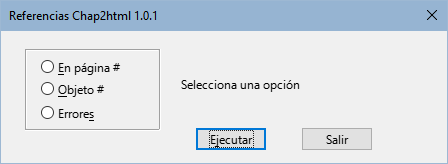
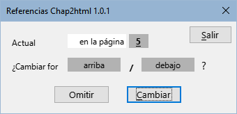

|
Español |
Macros para preparar las guías on Line de LibreOffice.
Este documento tiene derechos de autor © 2024 por el equipo de documentación de LibreOffice. Los colaboradores se listan más abajo. Se puede distribuir y modificar bajo los términos de la GNU General Public License versión 3 o posterior o la Creative Commons Attribution License, versión 4.0 o posterior.
Todas las marcas registradas mencionadas en esta guía pertenecen a sus propietarios legítimos.
|
Autor |
Colaboradores |
|
B.Antonio Fernández |
Olivier Hallot |
Las macros que componen la extensión aquí descrita son fruto de consultar distintas fuentes las cuales nombro en rasgos generales pues me es imposible detallar. Estas son:
La propia documentación del lenguaje Basic de los distintos derivados de StarOffice.
Los libros: Aprendiendo OooBasic de Mauricio Baeza, OpenOffice.org Macros Explained de Andrew Pitonyak y Programmation OpenOffice.org de Bernard Marcelly.
Consultas a los foros de OpenOffice y LibreOffice y el estudio de otras macros en las extensiones para Libre Office.
Chap2Html es una biblioteca de macros para Writer que pretende servir de ayuda para preparar los capítulos de las guías de LibreOffice para su exportación a html y visualización «on line».
Las macros adaptan en una sola pasada algunos formatos propios de los documentos odt para su exportación a html, evitando el costoso trabajo de adaptarlos manualmente.
Importante
Se deben tener dos copias de los archivos de los capítulos con el mismo nombre: el original para el archivo fuente, destinado al formato pdf o impreso y una copia para la preparación y exportación a html.
Al tener el mismo nombre, se deben almacenar en distintos directorios.
Asegúrese que está trabajando en la copia destinada a la exportación html antes de usar las macros pues no todos los cambios efectuados son reversibles.
Las macros están empaquetadas como extensión y su instalación se efectúa como cualquier otra extensión, desde el gestor de extensiones. Si encuentra problemas en la actualización o instalación de una nueva versión, desinstale la versión antigua e instale la nueva versión.
Están escritas en LO Basic por lo que deberían ser compatibles para cualquier sistema operativo con la única dependencia de los filtros xhtml incluidos en la extensión Writer2xhtml que se puede descargar en la página oficial de extensiones LibreOffice.
Añade una barra de herramientas (Figura 1), así como un menú con nombre LO Chap2html. Las herramientas también aparecen integradas en la interfaz de usuario En pestañas.
Las herramientas no disponen de diálogos iniciales, pero tras la ejecución se mostrará un mensaje con información de los cambios.
Están disponibles en español, inglés y portugués, con la posibilidad de agregar otros idiomas añadiendo traducciones al módulo L10n.
Figura 1: Barra de herramientas de Chap2html

El color de la letra de los títulos en las guías html cambia en función del componente de LibreOffice que trata la guía, para ello, se tienen que cambiar los estilos de los títulos del documento . Con esta macro se evita el cambio manual en cada capítulo con posibles errores al seleccionar los colores o el uso de plantillas separadas para cada guía.
La macro cambia automáticamente el color de la letra de los títulos en función de las letras del inicio del nombre del archivo por el color asignado a cada componente.
En el texto de los avisos puede haber saltos de párrafo y aunque Writer utiliza una única línea al final del texto, en html cada párrafo aparece con una línea.
La macro cambia los saltos de párrafo por saltos de línea de cada párrafo del texto de los avisos para conseguir la misma apariencia que las guías pdf o impresas.
Esta herramienta Abre un diálogo (Figura 2)que permite elegir entre tres tipos de de referencias y ejecutar la macro correspondiente para localizarlas y/o cambiarlas.
Figura 2: Diálogo Referencias

En la página #
Se abre un diálogo (Figura 3) para recorrer las remisiones sencillas a páginas del tipo «en la página #» y cambiarlas por arriba o abajo (en función de la situación del título).
Figura 3: Diálogo En la página

La macro cambia la referencia al número por referencia a Categoría y número (Ej. Figura 1) eliminando el nombre del objeto del texto que no pertenece al campo.
La macro comprueba estos campos con error y muestra un mensaje con las páginas donde están localizados.
La macro agrega las seis secciones adicionales necesarias para el formato html.
Nota
- Se utilizan los filtros de la extensión Writer2html porque crea un archivo html5 y el código resultante es más limpio que la exportación nativa de LibreOffice.
Importante
Asegúrese de utilizar la versión 1.7 «Final» o superior de Writer2xhtml. Con la versión 1.7 beta no se exporta correctamente el formato de listas ordenadas.
Figura 4: Diálogo Info